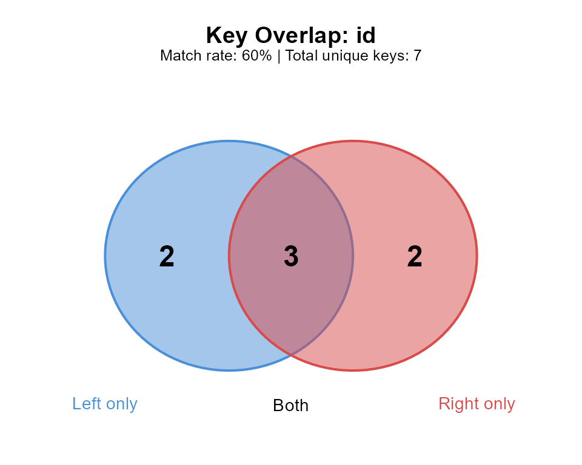

Getting Started with joinspy
Gilles Colling
2026-01-14
Source:vignettes/introduction.Rmd
introduction.RmdOverview
joinspy provides diagnostic tools for understanding and debugging data frame joins in R. Instead of discovering join problems after the fact, joinspy helps you identify issues upfront and understand what will happen when you join.
Key features:
- Pre-join diagnostics with
join_spy()andkey_check() - Duplicate detection with
key_duplicates() - Post-join analysis with
join_explain()andjoin_diff() - Safe wrappers:
left_join_spy(),right_join_spy(),inner_join_spy(),full_join_spy() - Cardinality enforcement with
join_strict() - Auto-repair with
join_repair()andsuggest_repairs() - Visualization with
plot()andsummary()methods
Installation
# Install development version from GitHub
# install.packages("pak")
pak::pak("gcol33/joinspy")What joinspy Does
joinspy analyzes join keys before you join, detecting:
- Duplicate keys (causes row multiplication)
- Whitespace issues (leading/trailing spaces)
- Case mismatches (“ABC” vs “abc”)
- Encoding problems (invisible Unicode characters)
- NA values in keys
- Type mismatches (numeric vs character)
Quick Examples
Pre-Join Diagnostics with join_spy()
# Sample data with issues
orders <- data.frame(
customer_id = c("A", "B", "B", "C", "D "),
amount = c(100, 200, 150, 300, 50),
stringsAsFactors = FALSE
)
customers <- data.frame(
customer_id = c("A", "B", "C", "D", "E"),
name = c("Alice", "Bob", "Carol", "David", "Eve"),
stringsAsFactors = FALSE
)
# Get diagnostic report
report <- join_spy(orders, customers, by = "customer_id")Use summary() for a compact data frame of metrics:
summary(report)
#> metric value
#> 1 left_rows 5.00
#> 2 right_rows 5.00
#> 3 left_unique_keys 4.00
#> 4 right_unique_keys 5.00
#> 5 keys_matched 3.00
#> 6 keys_left_only 1.00
#> 7 keys_right_only 2.00
#> 8 match_rate 0.75
#> 9 issues 2.00
#> 10 inner_join_rows 4.00
#> 11 left_join_rows 5.00
#> 12 right_join_rows 6.00
#> 13 full_join_rows 7.00Quick Check with key_check()
For a fast pass/fail assessment:
key_check(orders, customers, by = "customer_id")
#> ! Key check found 2 issue(s):
#> ✖ Left table has 1 duplicate key(s) (2 rows affected)
#> ✖ Left table column 'customer_id' has whitespace issues (1 values)Finding Duplicates with key_duplicates()
key_duplicates(orders, by = "customer_id")
#> customer_id amount .n_duplicates
#> 2 B 200 2
#> 3 B 150 2Join Wrappers
Use *_join_spy() functions for joins with automatic
diagnostics:
orders_clean <- data.frame(
customer_id = c("A", "B", "C"),
amount = c(100, 200, 300),
stringsAsFactors = FALSE
)
# Silent mode for pipelines
result <- left_join_spy(orders_clean, customers, by = "customer_id", .quiet = TRUE)
head(result)
#> customer_id amount name
#> 1 A 100 Alice
#> 2 B 200 Bob
#> 3 C 300 Carol
# Access diagnostics afterward
last_report()$match_analysis$match_rate
#> [1] 1Available wrappers:
| Function | Description |
|---|---|
left_join_spy() |
Left join with diagnostics |
right_join_spy() |
Right join with diagnostics |
inner_join_spy() |
Inner join with diagnostics |
full_join_spy() |
Full join with diagnostics |
Cardinality Enforcement
Use join_strict() to enforce expected relationships:
products <- data.frame(id = 1:3, name = c("Widget", "Gadget", "Gizmo"))
prices <- data.frame(id = 1:3, price = c(10, 20, 30))
# Succeeds - 1:1 relationship
join_strict(products, prices, by = "id", expect = "1:1")
#> id name price
#> 1 1 Widget 10
#> 2 2 Gadget 20
#> 3 3 Gizmo 30
# Fails - duplicates violate 1:1
prices_dup <- data.frame(id = c(1, 1, 2, 3), price = c(10, 15, 20, 30))
join_strict(products, prices_dup, by = "id", expect = "1:1")
#> Error:
#> ! Cardinality violation: expected 1:1 but found 1:m
#> Left duplicates: 0, Right duplicates: 1| Cardinality | Description |
|---|---|
"1:1" |
Each key unique in both tables |
"1:m" |
Left keys unique, right may duplicate |
"m:1" |
Right keys unique, left may duplicate |
"m:m" |
No constraints |
Auto-Repair
Fix common issues automatically:
messy <- data.frame(
id = c(" A", "B ", " C "),
value = 1:3,
stringsAsFactors = FALSE
)
# Preview repairs
join_repair(messy, by = "id", dry_run = TRUE)
#>
#> ── Repair Preview (Dry Run) ────────────────────────────────────────────────────
#>
#> ── Left table (x) ──
#>
#> ℹ id: trimmed whitespace (3)
# Apply repairs
fixed <- join_repair(messy, by = "id")
#> ✔ Repaired 3 value(s)
fixed$id
#> [1] "A" "B" "C"Post-Join Diagnostics
Explaining Row Count Changes
orders_dup <- data.frame(id = 1:3, product = c("A", "B", "C"))
inventory <- data.frame(id = c(1, 1, 2, 3), location = c("NY", "LA", "NY", "LA"))
result <- merge(orders_dup, inventory, by = "id")
join_explain(result, orders_dup, inventory, by = "id", type = "inner")
#>
#> ── Join Explanation ────────────────────────────────────────────────────────────
#>
#> ── Row Counts ──
#>
#> Left table (x): 3 rows
#> Right table (y): 4 rows
#> Result: 4 rows
#> ! Result has 1 more rows than left table
#>
#> ── Why the row count changed ──
#>
#> ℹ Right table has 1 duplicate key(s) - each match creates multiple rowsBefore/After Comparison
before <- data.frame(id = 1:3, val = c("a", "b", "c"))
after <- merge(before, data.frame(id = 2:4, name = c("B", "C", "D")), by = "id", all = TRUE)
join_diff(before, after, by = "id")
#>
#> ── Join Diff ───────────────────────────────────────────────────────────────────
#>
#> ── Dimensions ──
#>
#> Before: 3 rows x 2 columns
#> After: 4 rows x 3 columns
#> Change: "+1" rows, "+1" columns
#>
#> ── Column Changes ──
#>
#> ✔ Added: name
#>
#> ── Key Analysis ──
#>
#> Unique keys before: 3
#> Unique keys after: 4Visualization
orders <- data.frame(id = 1:5, val = 1:5)
customers <- data.frame(id = 3:7, name = letters[3:7])
report <- join_spy(orders, customers, by = "id")
plot(report) # Venn diagram
Quick Reference
join_spy()
Comprehensive pre-join diagnostic report.
join_spy(x, y, by, sample = NULL, ...)| Parameter | Description | Default |
|---|---|---|
x |
Left data frame | required |
y |
Right data frame | required |
by |
Column name(s) to join by | required |
sample |
Sample size for large datasets | NULL |
Returns: JoinReport S3 object with
print(), summary(), and plot()
methods.
key_check()
Quick pass/fail key quality assessment.
key_check(x, y, by)Returns: Logical TRUE if keys are
clean, FALSE otherwise (with messages).
join_strict()
Join with cardinality enforcement.
join_strict(x, y, by, type = "left", expect = "1:1")| Parameter | Description | Default |
|---|---|---|
type |
Join type: "left", "right",
"inner", "full"
|
"left" |
expect |
Expected cardinality: "1:1", "1:m",
"m:1", "m:m"
|
"1:1" |
Returns: Joined data frame, or error if cardinality violated.
join_repair()
Automatically fix common key issues.
join_repair(x, y = NULL, by, trim_whitespace = TRUE,
standardize_case = NULL, remove_invisible = TRUE,
empty_to_na = FALSE, dry_run = FALSE)| Parameter | Description | Default |
|---|---|---|
trim_whitespace |
Remove leading/trailing whitespace | TRUE |
standardize_case |
Convert to "lower" or "upper"
|
NULL |
remove_invisible |
Remove invisible Unicode characters | TRUE |
empty_to_na |
Convert "" to NA
|
FALSE |
dry_run |
Preview changes without modifying | FALSE |
Returns: Repaired data frame(s).
See Also
-
vignette("common-issues")- Catalogue of join problems and solutions -
?join_spy,?key_check,?join_strict,?join_repair
Session Info
sessionInfo()
#> R version 4.5.2 (2025-10-31 ucrt)
#> Platform: x86_64-w64-mingw32/x64
#> Running under: Windows 11 x64 (build 26200)
#>
#> Matrix products: default
#> LAPACK version 3.12.1
#>
#> locale:
#> [1] LC_COLLATE=English_United States.utf8
#> [2] LC_CTYPE=English_United States.utf8
#> [3] LC_MONETARY=English_United States.utf8
#> [4] LC_NUMERIC=C
#> [5] LC_TIME=English_United States.utf8
#>
#> time zone: Europe/Luxembourg
#> tzcode source: internal
#>
#> attached base packages:
#> [1] stats graphics grDevices utils datasets methods base
#>
#> other attached packages:
#> [1] joinspy_0.7.0
#>
#> loaded via a namespace (and not attached):
#> [1] vctrs_0.6.5 cli_3.6.5 knitr_1.51 rlang_1.1.6
#> [5] xfun_0.55 otel_0.2.0 textshaping_1.0.4 jsonlite_2.0.0
#> [9] glue_1.8.0 htmltools_0.5.9 ragg_1.5.0 sass_0.4.10
#> [13] rmarkdown_2.30 evaluate_1.0.5 jquerylib_0.1.4 fastmap_1.2.0
#> [17] yaml_2.3.12 lifecycle_1.0.5 compiler_4.5.2 fs_1.6.6
#> [21] htmlwidgets_1.6.4 systemfonts_1.3.1 digest_0.6.39 R6_2.6.1
#> [25] pillar_1.11.1 bslib_0.9.0 tools_4.5.2 pkgdown_2.2.0
#> [29] cachem_1.1.0 desc_1.4.3